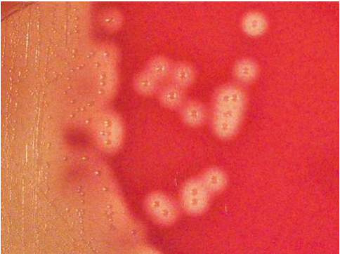

Agente etiológico más frecuente en las infecciones de piel y partes blandas.
CGP en cadena. Anaerobio facultativo. Exigente.
Betahemolítico. CATALASA (-) DNAsa (+).
Estreptococo de grupo A (SGA)
Cápsula: ác hialurónico: antifagocítica.
Estreptolisina S: halo de B hemólisis más grande
Estreptolisina O: inestable frente a O2.
Estreptocinasa: degrada coágulos
Exotoxina pirogénica estreptocócica: superantígeno
Ác Lipoteicoico:
Proteína M: bloquea C3b, interfiere fagocitosis. Adhesión. Similar a AG cardíaco = fiebre reumática
Hialurodinasa. Proteína F: adhesión.
Peptidasa C5a:
Se adhiere a c. epiteliales, en boca, naríz, piel.
SPE: rush de fiebre escarlatina.
Faringitis aguda, Escarlatina, Lengua aframbuesada, Erisipela, Impétigo, fasicits necrotizante, celulitis, Sx de shock tóxico estreptocócico. Neumonía.
COMPLICACIÓN no supurada: Glomerulonefritis y fiebre reumática post infección (faringitis, escarlat)
Por depósito de inmunocomplejos.
exudado faríngeo, punción, aspira
Cultivo: agar sangre y agar simple.
AC anti estreptolisina O
Aglutinación ne látex, ELISA para Antígeno A.
Serológico: AC anti estreptolisina O, DNAsa, estreptoquinasa, hialuronidasa.
- PENICILINA V.
- AMOXICILINA.
- PENICILINA G: en infección invasiva.
- si hay sx tóxico o sepsis = + CLINDAMICINA.
- Resistente? Doy ERITROMICINA.
NO HAY DESCRITA RESISTENCIA A PENICILINAS NI BETALACTÁMICOS.
Streptococcus Pyogenes GRAM POSITIVO, cocos en cadena
Cultivo en Agar Sangre, se ve la B-Hemólisis
Contenido trasero de la tarjeta 2
Contenido trasero de la tarjeta 3
Bienvenido!
Sitio en desarrollo (no dinámico), de uso reservado
Proyecto estudiantil.
Si te sirve házmelo saber!
Atte: Eze_ote